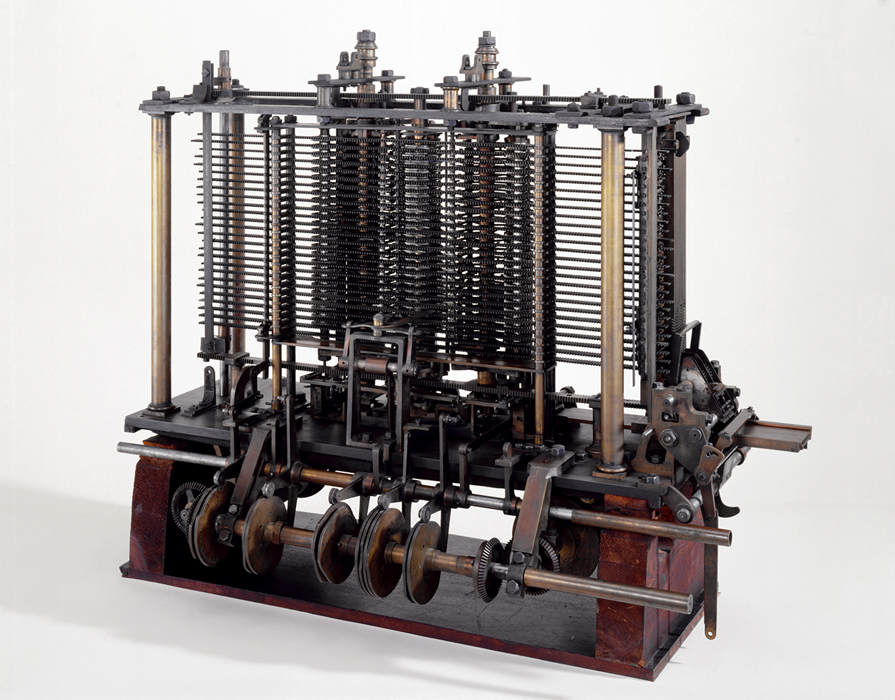

Invención de la calculadora
La invención de la calculadora marcó un hito significativo en la historia de la humanidad, al ofrecer una herramienta que simplificó drásticamente los cálculos matemáticos. A lo largo de los siglos, desde las primeras abacus chinas hasta las calculadoras electrónicas modernas, esta ingeniosa creación ha evolucionado de manera constante. Sin embargo, el punto de inflexión crucial se produjo en el siglo XVII, cuando el matemático alemán Gottfried Wilhelm Leibniz diseñó la "Máquina de Cálculo", que podía realizar operaciones aritméticas de suma, resta, multiplicación y división de manera automática. Esta invención revolucionaria allanó el camino para futuros avances, sentando las bases para la aparición de las calculadoras mecánicas y, finalmente, de las computadoras modernas que utilizamos hoy en día. La calculadora, en sus diversas formas a lo largo de la historia, ha contribuido de manera inestimable al progreso científico y tecnológico, simplificando tareas complejas y permitiendo a la humanidad explorar nuevos horizontes en la matemática y la ciencia.
Tipos de calculadoras
| Tipo | Inventor | Año de Invención |
|---|---|---|
| Mecánica | Blaise Pascal | 1642 |
| Electrónica | Jack Kilby | 1967 |
| Científica | Hewlett-Packard | 1972 |
| Gráfica | Texas Instruments | 1985 |
- Las calculadoras mecánicas fueron inventadas por Blaise Pascal en 1642. Estas primeras calculadoras utilizaban ruedas dentadas para realizar cálculos.
- Las calculadoras electrónicas modernas fueron desarrolladas por Jack Kilby en 1967. Utilizan circuitos electrónicos para realizar cálculos de manera rápida y precisa.
- Las calculadoras científicas, introducidas por Hewlett-Packard en 1972, son herramientas esenciales en campos como la ingeniería y la ciencia, ya que pueden realizar funciones trigonométricas y algebraicas avanzadas.
- Las calculadoras gráficas, como las producidas por Texas Instruments en 1985, son especialmente populares entre estudiantes y profesionales de las matemáticas, ya que pueden representar gráficamente ecuaciones y funciones.
Innovaciones tecnológicas
A lo largo del tiempo, las calculadoras han experimentado avances tecnológicos impresionantes. Las calculadoras mecánicas, como el ábaco, fueron los primeros dispositivos utilizados para cálculos. Sin embargo, en el siglo XX, las calculadoras electrónicas introdujeron la velocidad y precisión en los cálculos, lo que revolucionó la forma en que se realizaban las tareas matemáticas. Más tarde, surgieron las calculadoras programables que permitían a los usuarios realizar cálculos personalizados, almacenar fórmulas y ejecutar algoritmos complejos. Las calculadoras gráficas, por su parte, agregaron la capacidad de representar gráficamente funciones matemáticas, lo que resultó invaluable para estudiantes y profesionales en campos como la trigonometría y la estadística.
Impacto en la educación y la ciencia
El impacto de las calculadoras en la educación y la ciencia ha sido profundo. En el ámbito educativo, estas herramientas han liberado a los estudiantes de la tediosa tarea de realizar cálculos manuales, permitiéndoles centrarse en comprender conceptos matemáticos fundamentales. Además, en la investigación científica, las calculadoras han acelerado la resolución de problemas complejos y la recopilación de datos. Los científicos pueden realizar análisis más profundos y experimentos más avanzados gracias a la capacidad de las calculadoras para realizar cálculos precisos en cuestión de segundos, lo que ha impulsado avances significativos en diversas disciplinas.
Usos cotidianos
Las calculadoras tienen una amplia variedad de usos en la vida cotidiana. Desde calcular facturas y presupuestos en el hogar hasta estimar costos en proyectos de construcción o realizar cálculos financieros en el mundo empresarial, estas herramientas son fundamentales. Además, son una parte esencial de la contabilidad, donde se utilizan para llevar registros precisos de transacciones financieras. En el campo de la ingeniería, las calculadoras se emplean para diseñar estructuras y realizar cálculos de ingeniería, garantizando la seguridad y la eficiencia de los proyectos.
Calculadoras en la era digital
Con la llegada de la era digital, las calculadoras se han adaptado a dispositivos como teléfonos inteligentes y computadoras personales. Las aplicaciones de calculadora ofrecen funcionalidades avanzadas y están disponibles en cualquier momento y lugar. Esto ha transformado la forma en que las personas realizan cálculos y ha brindado acceso rápido a estas herramientas en situaciones cotidianas y profesionales. La conveniencia de tener una calculadora siempre al alcance de la mano ha simplificado aún más la vida de las personas en la era digital.
Contribuciones de empresas y científicos
Empresas líderes como Texas Instruments y Casio han desempeñado un papel fundamental en la fabricación de calculadoras, introduciendo modelos emblemáticos en el mercado. Además, figuras históricas como John Napier, con la invención de los logaritmos, han contribuido significativamente a la teoría matemática subyacente utilizada en las calculadoras. Estas contribuciones tanto en el desarrollo tecnológico como en la teoría matemática han sido cruciales para el éxito y la evolución de las calculadoras a lo largo del tiempo.
Calculadoras programables
Las calculadoras programables han revolucionado la forma en que se abordan problemas complejos en campos como la ingeniería y la informática. Estas calculadoras permiten a los usuarios crear y ejecutar programas personalizados, lo que es esencial en situaciones donde se realizan cálculos repetitivos o se deben resolver problemas específicos. Los programadores pueden escribir algoritmos para automatizar tareas y realizar cálculos especializados, lo que ha aumentado la eficiencia en numerosos campos profesionales.
Calculadoras en la computación
Las calculadoras electrónicas tempranas desempeñaron un papel fundamental en el desarrollo de la computación moderna. La Máquina Analítica de Charles Babbage, un precursor de las computadoras, utilizaba principios matemáticos similares a los de las calculadoras para realizar cálculos complejos. Además, las calculadoras de ENIAC, las primeras computadoras electrónicas, se basaron en conceptos de cálculo similares a los utilizados en las calculadoras. Estos avances allanaron el camino para el desarrollo de las computadoras personales y la revolución digital que cambió el mundo de la tecnología.
Calculadoras y matemáticas avanzadas
Las calculadoras científicas son herramientas esenciales en campos como la estadística, la ingeniería y la física, donde se realizan cálculos avanzados y análisis de datos complejos. Pueden resolver ecuaciones algebraicas, realizar derivadas e integrales, y proporcionar resultados precisos en cálculos de probabilidad y estadísticas. Para profesionales y estudiantes en estas disciplinas, las calculadoras científicas se han convertido en aliadas fundamentales, simplificando tareas complejas y permitiendo un enfoque más profundo en la resolución de problemas matemáticos y científicos.
Desarrollo futuro
El futuro de las calculadoras es emocionante y promete seguir evolucionando. Con los avances en inteligencia artificial y conectividad, las calculadoras podrían ofrecer capacidades aún más avanzadas en el futuro. Esto podría incluir la capacidad de reconocimiento de voz y la integración con sistemas de inteligencia artificial para realizar cálculos y responder preguntas de manera más intuitiva. Además, la interconexión con otros dispositivos y la capacidad de acceder a la nube para realizar cálculos más complejos podrían ser aspectos clave del desarrollo futuro de estas herramientas, lo que abriría nuevas posibilidades en campos como la ciencia, la ingeniería y la educación.
Futuro de las calculadoras
El futuro de las calculadoras promete una continua evolución en la convergencia de la tecnología y la matemática. A medida que avanzamos en la era digital, las calculadoras se vuelven cada vez más inteligentes y versátiles. La incorporación de inteligencia artificial y aprendizaje automático permitirá que estas herramientas anticipen las necesidades del usuario, ofreciendo soluciones más rápidas y precisas. Además, la conectividad inalámbrica y la integración con dispositivos inteligentes permitirán a las calculadoras interactuar de manera más fluida con otros dispositivos y aplicaciones, lo que ampliará su utilidad en campos como la educación, la ingeniería, las finanzas y más. En resumen, el futuro de las calculadoras parece prometedor, ya que seguirán siendo una herramienta esencial pero cada vez más sofisticada en el mundo moderno.